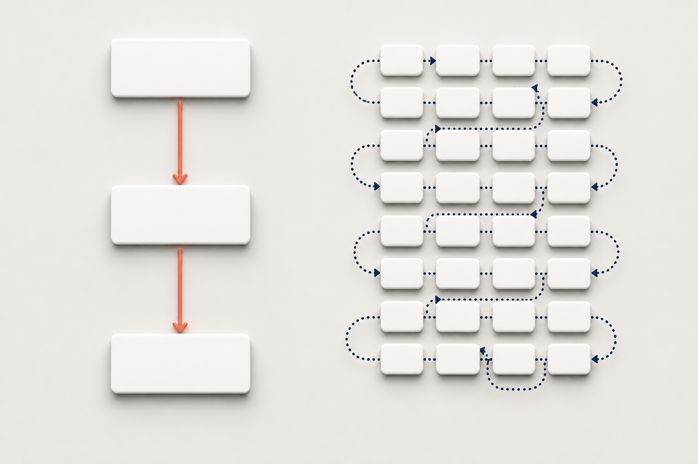

용인 소상공인 마케팅, 포곡과 수지에서 같은 전략이 안 통하는 이유
같은 용인이라도 포곡읍과 수지구는 손님이 움직이는 방식이 다릅니다. 주말 목적 방문과 차량 이동, 생활권 밀집과 도보 반복 소비로 나눠 검색 목적과 키워드 설계가 어떻게 갈리는지 정리했습니다.

노티스랩 사무실은 처인구 포곡읍에 있습니다. 같은 용인에서도 수지구 매장을 상담할 때와 포곡읍 매장을 상담할 때 준비하는 질문이 다릅니다. 지역 이름이 같아도 손님이 집을 나서는 이유와 검색하는 시점이 다르기 때문입니다.
이 글은 두 상권을 나란히 놓고, 왜 같은 제목과 같은 사진, 같은 발행 시간으로는 양쪽 모두에서 힘을 잃는지 정리했습니다. 특정 업종의 사례가 아니라 상권의 구조를 비교하는 글입니다.
포곡: 목적이 있어야 움직이는 상권#
포곡읍은 차로 오는 손님이 중심입니다. 주거지가 넓게 퍼져 있고, 큰 도로를 따라 이동하는 거리가 깁니다. 에버랜드를 비롯한 테마 시설과 체험·레저 시설이 있어 주말에는 목적을 가진 방문이 몰리고, 평일에는 그 흐름이 크게 줄어듭니다.
이 상권에서 손님이 검색하는 시점은 집을 나서기 전입니다. 오늘 갈 수 있는지, 몇 시까지 하는지, 차를 어디에 세우는지, 아이와 함께 가도 되는지, 예약을 받는지. 검색어에는 목적과 조건이 함께 붙습니다.
- 주차가 되는지, 주차장이 넓은지
- 영업시간과 휴무일, 라스트오더
- 예약이나 대기 방식
- 아이·반려동물 동반 가능 여부
- 코스나 체험의 소요 시간
그래서 포곡 매장의 글은 가기 전에 확인하는 정보가 본문에 있어야 합니다. 사진이 좋아도 주차 안내가 없으면 검색자는 뒤로 가기를 누릅니다. 평일과 주말의 운영이 다르다면 그 차이를 따로 적는 편이 좋습니다.
수지: 매일 지나가는 상권#
수지구는 반대입니다. 아파트 단지가 밀집해 있고, 죽전역과 수지구청·성복·동천·상현 일대의 역을 중심으로 도보와 대중교통 이동이 많습니다. 차 없이도 생활이 되는 구조라, 손님은 집에서 가까운 곳을 반복해서 찾습니다.
이 상권의 검색은 결정 직전에 일어납니다. 지금 문을 열었는지, 대기하지 않고 들어갈 수 있는지, 포장이 되는지, 오늘 저녁에 배달이 되는지. 같은 손님이 한 달에 여러 번 검색하고 여러 번 방문합니다.
- 지금 영업 중인지, 브레이크 타임은 언제인지
- 포장과 배달 가능 여부, 최소 주문 금액
- 대기 시간과 예약 방식
- 단골 혜택이나 재방문 쿠폰
- 아이와 유모차가 들어갈 수 있는지
수지 매장의 글은 오늘 갈 수 있는 이유를 만들어야 합니다. 먼 곳에서 일부러 오게 하는 설명보다, 지금 이 시간에 맞는 정보가 반응을 만듭니다. 영업시간과 가격이 플레이스와 어긋나면 반복 손님이 가장 먼저 이탈합니다.
검색어가 갈리는 지점#

두 상권의 키워드는 층이 다릅니다. 아래는 설명을 위한 예시이며, 실제 검색량은 업종과 시기에 따라 달라집니다.
- 포곡·처인 쪽 예시. 포곡 카페 주차, 처인구 아이랑 갈 만한 곳, 에버랜드 근처 점심, 포곡 체험 예약
- 수지 쪽 예시. 죽전역 점심, 수지구청역 커피, 성복역 미용실 예약, 수지 포장 되는 곳
포곡 쪽은 목적지나 시설을 기준점으로 삼고, 그 주변에서 조건을 붙입니다. 수지 쪽은 역과 단지 이름을 기준점으로 삼고, 지금 이용할 수 있는 조건을 붙입니다. 같은 "용인"이라는 단어를 앞에 붙이면 양쪽 모두에서 어중간해집니다.
같은 매장이 두 곳에 있다면#
지점이 둘이면 글도 둘로 나눠야 합니다. 지역 이름만 갈아 끼운 같은 글을 두 번 올리면 검색에서도 중복으로 평가받기 쉽고, 손님도 차이를 알 수 없습니다. 같은 사진을 두 지점에 함께 쓰는 것도 피하는 편이 좋습니다.
플레이스도 각각 관리해야 합니다. 영업시간, 주차, 휴무일, 가격이 지점마다 다르다면 그 차이가 글과 플레이스에 동시에 반영되어야 합니다. 한쪽 정보를 복사해 다른 쪽에 붙이면 두 곳 모두에서 신뢰를 잃습니다.
상권을 판단하는 세 가지 질문#
지역 이름만 보고 상권을 정하지 않으려면 세 가지를 물어보면 됩니다.
- 손님은 무엇을 보고 움직이나요. 목적지가 이미 정해져 있는지, 집 근처에서 고르는지에 따라 검색 시점이 달라집니다. 목적이 있으면 며칠 전부터, 없으면 당일에 검색합니다.
- 무엇을 타고 오나요. 차로 오는 상권은 주차와 진입로가 글에 있어야 하고, 걸어서 오는 상권은 역과 단지에서 오는 길이 있어야 합니다.
- 한 달에 몇 번 올 수 있나요. 한 번 오는 손님에게는 방문의 가치를, 여러 번 오는 손님에게는 다시 올 이유를 먼저 보여줘야 합니다.
이 세 답이 포곡과 수지를 갈라놓습니다. 같은 용인이라는 이름은 이 답을 대신하지 못합니다.
상권별로 글을 짜는 예시#
포곡 매장이라면 이렇게 석 편을 나눌 수 있습니다. 첫째, 오는 길과 주차, 영업시간을 정리한 안내 글. 둘째, 주말에 아이와 함께 할 수 있는 코스를 설명한 글. 셋째, 예약이 필요한 시점과 방법을 다룬 글입니다.
수지 매장이라면 순서가 달라집니다. 첫째, 지금 바로 이용할 수 있는 메뉴와 포장 안내. 둘째, 역에서 걸어오는 길과 대기 시간을 다룬 글. 셋째, 단골이 반복해서 찾는 이유를 정리한 글입니다.
두 상권 모두에서 통하는 것은 하나입니다. 글을 쓰기 전에 손님이 어디서 출발해 무엇을 확인하고 움직이는지 정하는 일입니다. 이 순서는 용인 블로그 마케팅, 생활권별 키워드 설계에 다섯 단계로 정리해 두었습니다.
이 구분이 통하지 않는 경우#
- 상권 단위 자료는 평균입니다. 같은 포곡읍 안에서도 도로변과 안쪽 골목은 방문 방식이 다르고, 같은 수지구에서도 역 앞과 단지 안쪽은 다릅니다.
- 고객이 동네 밖에서 오는 업종은 지역 키워드의 효율이 떨어집니다. B2B 납품, 시공, 시설 임대처럼 거래 범위가 지역과 무관한 경우입니다.
- 테마 시설에 의존하는 상권은 시즌에 따라 검색이 크게 흔들립니다. 방학과 축제가 끝나면 같은 글도 다른 반응을 냅니다.
- 배달 비중이 큰 매장은 노출 반경을 따로 계산해야 합니다. 배달 앱의 범위는 플레이스 검색 범위와 다릅니다.
자주 묻는 질문#
포곡 매장인데 수지 손님도 오게 하려면 어떻게 해야 하나요?#
일부러 움직일 이유를 제목에 넣는 것이 먼저입니다. 주차가 넓다, 아이와 함께 갈 수 있다, 주말에 예약이 가능하다처럼 이동의 이유가 되는 조건을 앞세우면 생활권 밖에서도 검색이 생깁니다. 다만 거리가 멀수록 방문 빈도는 낮아지므로, 재방문보다 한 번의 방문 가치를 높이는 구성이 맞습니다.
수지에서도 용인 키워드를 써야 하나요?#
쓰지 않아도 됩니다. 수지 손님은 보통 역 이름이나 단지 이름으로 검색합니다. '용인'은 지역 전체를 대상으로 하는 업종이나 행정·시설 안내에 가깝습니다. 대신 글 안에 수지구라는 사실을 한 번 밝혀 두면 지역 정보가 정리됩니다.
두 지점을 운영하면 블로그를 따로 해야 하나요?#
플레이스는 반드시 따로 관리하고, 블로그는 한 채널에 지점별 글로 나누는 방법과 지점별 채널을 두는 방법이 있습니다. 어느 쪽이든 같은 원고를 두 번 올리는 것은 피해야 합니다. 손님이 검색하는 이름이 지점마다 다르기 때문에 제목과 소재도 달라야 합니다.
마무리: 같은 용인, 다른 출발점#
포곡은 목적과 차량 이동, 수지는 생활권과 도보 이동이 중심입니다. 이 차이를 인정하면 키워드, 글의 순서, 플레이스에 넣을 정보가 자연스럽게 갈립니다. 반대로 같은 전략을 두 번 적용하면 두 상권 어디에서도 선명해지지 않습니다.
매장이 있는 동네와 업종을 알려주시면, 어느 쪽 상권인지에 따라 첫 달에 쓸 키워드와 글의 순서를 정리해 드립니다.
KEEP READING
이어서 읽기
같은 흐름에서 이어지는 글입니다. 지금 매장에 해당하는 지점부터 읽으시면 됩니다.

블로그 대행 맡기기 전, 월 관리비보다 먼저 확인할 5가지
월 관리비만 비교하면 이름이 같은 다른 서비스를 견주게 됩니다. 견적 구성, 업무 범위, 원고 소유권, 보고서 기준, 제작 방식까지 계약 전에 확인할 다섯 가지와 그대로 물어볼 문장을 정리했습니다.

용인 블로그 마케팅: 수지·기흥·처인 생활권별 키워드 설계 5단계
용인은 하나의 상권이 아닙니다. 수지·기흥·처인 생활권을 나누고 지역 키워드를 동네·이동 지점·상황 순서로 쌓는 방법과, 플레이스와 블로그의 역할 분담을 다섯 단계로 정리했습니다.